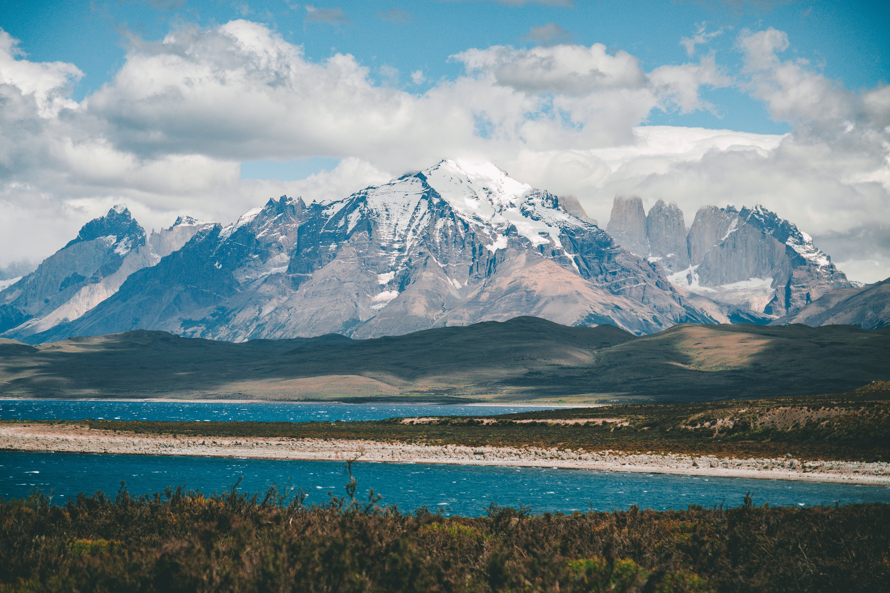
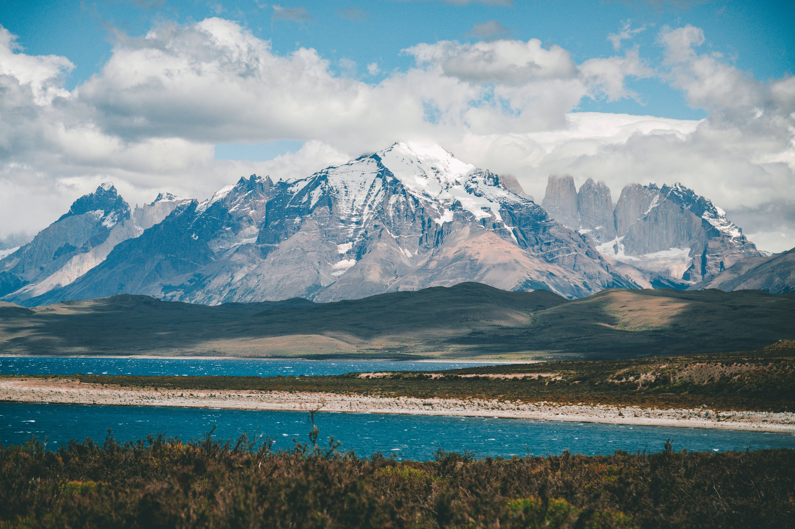

Visiting South America
South America is a captivating continent that boasts a rich tapestry of cultures, landscapes, and experiences, making it a must-visit destination for travelers seeking diversity and adventure.
From the vibrant rhythms of Brazil's Carnival to the awe-inspiring landscapes of Patagonia, South America offers a wide array of attractions.The continent is home to some of the world's most iconic landmarks, including the ancient ruins of Machu Picchu in Peru, the Christ the Redeemer statue overlooking Rio de Janeiro, and the Amazon Rainforest, the planet's largest tropical rainforest with an unparalleled biodiversity. South America's cultural diversity is evident in its festivals, cuisine, and traditions.
Each country has its own unique identity, reflected in the lively street markets of Colombia, the tango-filled streets of Buenos Aires, and the indigenous communities of Bolivia. For nature enthusiasts, South America is a paradise with its diverse ecosystems.
Explore the Galápagos Islands for unique wildlife encounters, hike the Andes Mountains for breathtaking vistas, or relax on the pristine beaches of the Caribbean and Pacific coasts. Whether you're an adventure seeker, a history buff, or simply looking to immerse yourself in a vibrant and diverse culture, South America beckons with its warmth, beauty, and an array of experiences that promise to leave a lasting impression.
The continent's warmth extends beyond its tropical climates to the hospitality of its people. Engage in lively conversations in the bustling markets, savor local delicacies, and partake in the festivities that characterize South American life.
 
